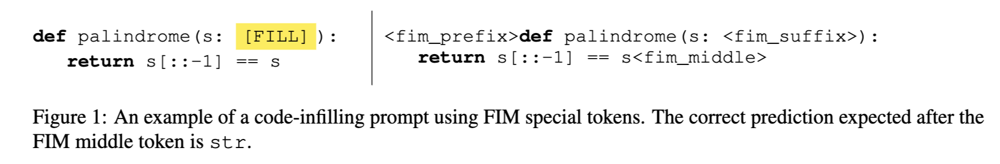

Steering
November 24, 2024 • Alex Loftus, Rohit Gandikota, Dmitrii Troitskii
We now examine the emergence of activation steering as a method for controlling large language models. This technique has developed rapidly over the past year, with three key papers establishing its theoretical foundations and practical applications.
Our examination focuses on how activation steering evolved from initial insights about model representations to a practical technique for controlling model behavior. We trace this development through three papers that build on each other, each making distinct contributions to our understanding of how to manipulate transformer internal states.
The first paper, "Understanding How CodeLLMs (Mis)Predict Types" by Lucchetti and Guha, demonstrates the potential of activation steering through its application to type prediction in code models. The second, "Inference-Time Intervention" by Li et al., formalizes steering techniques and shows their effectiveness for enhancing model truthfulness. The third paper, "Representation Surgery" by Singh et al., provides theoretical foundations by characterizing optimal steering functions and establishing formal guarantees.
Understanding How CodeLLMs (Mis)Predict Types
This paper was published by Francesca Luchetti and Arjun Guha, both at Northeastern University. Francesca is a PhD student in Arjun's lab, and Arjun is a professor. Their group focuses on coding LLMs.
Lucchetti and Guha investigate type prediction in code language models, focusing on Python and TypeScript. They investigate what happens when a model mispredicts a type, which models can be made to do by applying semantics-preserving edits to code. Starting with a correct type prediction, we can apply semantics-preserving edits to the prompt until the type prediction fails. By using activation steering, the authors are able to steer the model back to the correct prediction - making models more robust against semantically irrelevant prompt features. Interestingly, steering vectors computed from Python code are effective at correcting TypeScript mispredictions, and vice-versa. Their key insight is that models often contain robust mechanisms for tasks that can be accessed through activation steering, even when surface behavior suggests otherwise.
Methodology They built steering datasets for the 1B and 7B parameter StarCoderBase models, both of which are trained to fill-in-the-middle. The dataset is pulled from github rather than using prompt templates; ManyTypes4Py was used for Python type prediction, which features code from 5,382 Python projects that use type annotation. They collect triplets \( (x+, x-, t) \), where t is the type of the prompt x+, and x- is a semantically-equivalent prompt that is misclassified. x- is obtained by renaming the variable, removing the type annotation, renaming a user-defined type, and renaming a builtin type.
A brief sidenote to explain fill-in-the-middle (FIM): FIM is a training technique where coding LLMs learn to predict missing segments between a prefix and suffix. For example, given x: and = "hello world", the model learns to predict str as the type annotation. While inference typically uses left-to-right generation, this training helps models better understand code structure.

The relevance here is that FIM is used to ensure that the last token is always the type annotation, which is the target of the steering task.
They then take these steering triplets, apply forward pases to both the positive and negative sample, and save residual stream activations on the last token. Steering vectors are computed per-layer with the following formula:
where \(\mathcal{D}\) is the set of steering triplets, \(A_l (x) \) is the residual stream activation at some layer \(l\) and prompt \(x\). The intuition behind this equation is that the distance between positive and negative pairs in activation space encodes the transformation for steering towards the correct type prediction. The last token in all prompts is fim_middle, the type which is being predicted.
The model is steered by adding the steering vector \(t_l \) to the last token's residual stream at layer \(l\).
Experiments and Results They find which layers are most effective for steering using a layer ablation method, evaluate the accuracy of steering on different datasets, and explore patching both on single layers and sets of adjacent layers.
Once they determine which layers are most effective for steering, they apply it and report results in both python and typescript. It works well pretty much across the board compared to steering with a random vector.
An interesting finding is that steering vectors computed from one programming language transfer effectively to another - suggesting models learn fundamental, language-agnostic representations of programming concepts.
 They also compare steering to fine-tuning. It turns out that steering is approximately as effective as fine-tuning:
They also compare steering to fine-tuning. It turns out that steering is approximately as effective as fine-tuning:
Making Language Models More Truthful: A Deep Dive into Inference-Time Intervention
The Problem: Truth-Telling in Language Models
Large Language Models (LLMs) have become increasingly sophisticated, but they still struggle with a fundamental issue: they don't always tell the truth, even when they "know" the correct answer. This fascinating paper from Harvard researchers introduces a novel technique called Inference-Time Intervention (ITI) to address this problem.
The key insight here is that LLMs might have an internal representation of truth, even when they produce falsehoods in their outputs. This suggests an interesting interpretability question: can we identify and manipulate these truth-related representations to make models more truthful?
Finding "Truth" in Model Activations
The authors take a novel approach by using linear probes to identify which attention heads in the model are most associated with truthful outputs. What they found is remarkable - certain attention heads appear to specialize in truth-telling, with some achieving up to 83.3% accuracy in predicting whether an output will be truthful.
The geometry of these truth representations is particularly interesting. When visualizing the activation space, they found that truthful and false statements form distinct clusters, suggesting that the model internally encodes some notion of truth versus falsehood.
The Intervention Method
Rather than modifying model weights or fine-tuning, ITI works by identifying the most truth-associated attention heads and calculating a "truth direction" in their activation space. During inference, activations in these heads are shifted along their truth directions. This intervention is remarkably minimal and computationally inexpensive.
Detailed Results: Breaking Down the Impact
The results of ITI are particularly interesting when we look at how it performs across different types of questions. Figure 5 from the paper shows a fascinating breakdown of improvement across various subcategories in the TruthfulQA dataset.
What's particularly striking about these results is the consistency of improvement across categories. The intervention doesn't just work well for one type of question - it shows improvements across most subcategories, from health-related questions to historical facts. For instance:
In the "Health" category, the model's truthfulness improved dramatically, correcting common misconceptions about medical treatments and dietary advice. Questions about law and economics also saw substantial improvements, suggesting that the intervention helps the model be more precise with factual information rather than defaulting to common but incorrect beliefs.
Perhaps most intriguingly, the improvement isn't uniform across categories. Some categories show much larger gains than others, but there's no clear pattern suggesting why certain types of questions are more amenable to improvement. This hints at something fundamental about how different types of knowledge are encoded in the model's weights.
The robustness of these improvements is further validated by the model's performance on out-of-distribution datasets. When tested on Natural Questions, TriviaQA, and MMLU, the intervention continued to show improvements, albeit smaller ones. This suggests that the "truth" directions identified by ITI capture something fundamental about how the model represents factual information, not just specific patterns in the training data.
The impact of this intervention is substantial. On the TruthfulQA benchmark, ITI improves truth-telling from 32.5% to 65.1% on Alpaca. What's particularly impressive is that this improvement comes with minimal computational overhead and requires only hundreds of examples to calibrate - a stark contrast to expensive fine-tuning approaches.
My Technical Take
From an interpretability perspective, this paper opens up fascinating questions about how truth is represented in neural networks. The fact that truth can be represented as linear directions in activation space is surprising and suggests that models might learn to encode truth values in a more structured way than previously thought.
The strong localization of truth-related computations to specific attention heads is quite interesting. This aligns with other work showing attention head specialization, but raises questions about why truth-telling would be modularized in this way. Are these heads truly computing truth, or are they detecting patterns that merely correlate with truthful outputs?
However, there are important limitations to consider. The definition of "truth" is limited to the TruthfulQA benchmark's conception, and there's a clear trade-off between truthfulness and helpfulness that needs more investigation. The paper also doesn't fully explore what other aspects of model behavior might be affected by the intervention.
Representation Surgery
This paper develops the theoretical foundations for steering functions - tools that help guide language model outputs toward desired characteristics.
Formulation
The work builds on LEACE (Belrose, 2023), which introduced optimal affine guarding functions for erasing concepts from model representations. The key insight is that by matching the averages (means) of representations between concepts, we can ensure affine guardedness.
The authors first propose a simple solution that matches means. This transformation shifts representations of concept \(c\) toward concept \(c'\) by \((μ_{c'} - μ_c)\) while leaving representations that already have concept \(c'\) unchanged. This approach minimizes changes while ensuring the means match, providing theoretical backing for the "activation shift" technique used in Li (2024).
\[\min_{s \in \text{Aff}_s(D)} \mathbb{E}\left[\|\mathbf{H} - s(\mathbf{H})\|_2^2\right]\]
\[\text{subject to } \mathbb{E}[s(\mathbf{H}_c)] = \mathbb{E}[s(\mathbf{H}_{c'})]\]
\[\text{has a solution}\]
\[\quad s^*(\mathbf{H})(\mathbf{s}) = \begin{cases} \mathbf{H}(\mathbf{s}) + \boldsymbol{\mu}_{c'} - \mathbf{W}^* \boldsymbol{\mu}_c & \text{if } \phi(\mathbf{s}) = c \\[1ex] \mathbf{H}(\mathbf{s}) & \text{if } \phi(\mathbf{s}) = c' \end{cases} \qquad (1)\]
\[\text{where } \mathbf{W}^* = \mathbf{I}\]
However, matching only means leaves open the possibility of recovering the original concepts through non-linear methods.
To address this, the authors extend their approach to match both means and covariances. This more sophisticated version applies an affine transformation \(\mathbf{W}\mathbf{H} + \mathbf{b}\) to concept c representations, where \(\mathbf{W}\) is derived from covariance matrices and \(\mathbf{b}\) ensures mean alignment. This preserves both mean behavior and relationships between features while leaving concept \(c'\) unchanged.
\[\min_{s \in \text{Aff}_s(D)} \mathbb{E}\left[\|\mathbf{H} - s(\mathbf{H})\|_2^2\right]\]
\[\text{subject to } \begin{aligned} & \mathbb{E}[s(\mathbf{H}_c)] = \mathbb{E}[s(\mathbf{H}_{c'})] \\ & \mathbb{E}[s(\mathbf{H}_c)s(\mathbf{H}_c)^\top] = \mathbb{E}[s(\mathbf{H}_{c'})s(\mathbf{H}_{c'})^\top] \end{aligned}\]
\[\text{has the solution}\]
\[\quad s^*(\mathbf{H})(\mathbf{s}) = \begin{cases} \mathbf{W}^*\mathbf{H}(\mathbf{s}) + \mathbf{b}^* & \text{if } \phi(\mathbf{s}) = c \\[1ex] \mathbf{H}(\mathbf{s}) & \text{if } \phi(\mathbf{s}) = c' \end{cases} \qquad (2)\]
\[\text{where we define}\]
\[\mathbf{W}^* = \boldsymbol{\Sigma}_c^{-\frac{1}{2}}(\boldsymbol{\Sigma}_c^{\frac{1}{2}}\boldsymbol{\Sigma}_{c'}\boldsymbol{\Sigma}_c^{\frac{1}{2}})^{\frac{1}{2}}\boldsymbol{\Sigma}_c^{-\frac{1}{2}}\]
\[\mathbf{b}^* = -\mathbf{W}^*\boldsymbol{\mu}_c + \boldsymbol{\mu}_{c'}\]
Experiments
The authors test their steering functions in several scenarios:
-
Gender Bias in Profession Classification: They train a linear probe to predict professions from the last layer representation of the last token of Llama 2, using biographies of gendered professionals. Performance is measured through both prediction accuracy and true positive rate (expected to be minimized).
Results show that while mean-matching performs similarly to LEACE, the mean-and-covariance matching method achieves significantly better results compared to other approaches.
-
Toxicity Reduction: The authors apply their steering functions to reduce toxicity during text generation by intervening in the last hidden representation at each inference step.

While both proposed methods successfully mitigate toxicity, they don't achieve state-of-the-art performance. This might be due to the mismatch between training (using last token representations) and inference (applying interventions at each generation step).
However, their methods offer a key advantage: unlike baselines that require either fine-tuning or gradient computation during inference, these steering functions need neither, making them more computationally efficient.
Discussion Questions
- How do the theoretical guarantees from Representation Surgery relate to the empirical findings about language transfer in the CodeLLM paper?
- Is it possible to create steering functions that match moments of distribution beyond the second moment? What are the limitations and benefits of doing so?
- What are the tradeoffs between targeting specific attention heads versus intervening in the full residual stream?
- How might these techniques generalize beyond code and truthfulness to other aspects of model behavior?
- What are the limitations of current steering methods and what theoretical advances might help overcome them?